Monte Carlo Sampling Distribution for the Elements of the Standardized Matrix of Lagged Coefficients Over a Specific Time Interval or a Range of Time Intervals
Source:R/cTMed-mc-beta-std.R
MCBetaStd.RdThis function generates a Monte Carlo method sampling distribution for the elements of the standardized matrix of lagged coefficients \(\boldsymbol{\beta}\) over a specific time interval \(\Delta t\) or a range of time intervals using the first-order stochastic differential equation model drift matrix \(\boldsymbol{\Phi}\) and process noise covariance matrix \(\boldsymbol{\Sigma}\).
Usage
MCBetaStd(
phi,
sigma,
vcov_theta,
delta_t,
R,
test_phi = TRUE,
ncores = NULL,
seed = NULL,
tol = 0.01
)Arguments
- phi
Numeric matrix. The drift matrix (\(\boldsymbol{\Phi}\)).
phishould have row and column names pertaining to the variables in the system.- sigma
Numeric matrix. The process noise covariance matrix (\(\boldsymbol{\Sigma}\)).
- vcov_theta
Numeric matrix. The sampling variance-covariance matrix of \(\mathrm{vec} \left( \boldsymbol{\Phi} \right)\) and \(\mathrm{vech} \left( \boldsymbol{\Sigma} \right)\)
- delta_t
Numeric. Time interval (\(\Delta t\)).
- R
Positive integer. Number of replications.
- test_phi
Logical. If
test_phi = TRUE, the function tests the stability of the generated drift matrix \(\boldsymbol{\Phi}\). If the test returnsFALSE, the function generates a new drift matrix \(\boldsymbol{\Phi}\) and runs the test recursively until the test returnsTRUE.- ncores
Positive integer. Number of cores to use. If
ncores = NULL, use a single core. Consider using multiple cores when number of replicationsRis a large value.- seed
Random seed.
- tol
Numeric. Smallest possible time interval to allow.
Value
Returns an object
of class ctmedmc which is a list with the following elements:
- call
Function call.
- args
Function arguments.
- fun
Function used ("MCBetaStd").
- output
A list the length of which is equal to the length of
delta_t.
Each element in the output list has the following elements:
- est
Estimated elements of the standardized matrix of lagged coefficients.
- thetahatstar
A matrix of Monte Carlo elements of the standardized matrix of lagged coefficients.
Details
See TotalStd().
Monte Carlo Method
Let \(\boldsymbol{\theta}\) be a vector that combines \(\mathrm{vec} \left( \boldsymbol{\Phi} \right)\), that is, the elements of the \(\boldsymbol{\Phi}\) matrix in vector form sorted column-wise and \(\mathrm{vech} \left( \boldsymbol{\Sigma} \right)\), that is, the unique elements of the \(\boldsymbol{\Sigma}\) matrix in vector form sorted column-wise. Let \(\hat{\boldsymbol{\theta}}\) be a vector that combines \(\mathrm{vec} \left( \hat{\boldsymbol{\Phi}} \right)\) and \(\mathrm{vech} \left( \hat{\boldsymbol{\Sigma}} \right)\). Based on the asymptotic properties of maximum likelihood estimators, we can assume that estimators are normally distributed around the population parameters. $$ \hat{\boldsymbol{\theta}} \sim \mathcal{N} \left( \boldsymbol{\theta}, \mathbb{V} \left( \hat{\boldsymbol{\theta}} \right) \right) $$ Using this distributional assumption, a sampling distribution of \(\hat{\boldsymbol{\theta}}\) which we refer to as \(\hat{\boldsymbol{\theta}}^{\ast}\) can be generated by replacing the population parameters with sample estimates, that is, $$ \hat{\boldsymbol{\theta}}^{\ast} \sim \mathcal{N} \left( \hat{\boldsymbol{\theta}}, \hat{\mathbb{V}} \left( \hat{\boldsymbol{\theta}} \right) \right) . $$ Let \(\mathbf{g} \left( \hat{\boldsymbol{\theta}} \right)\) be a parameter that is a function of the estimated parameters. A sampling distribution of \(\mathbf{g} \left( \hat{\boldsymbol{\theta}} \right)\) , which we refer to as \(\mathbf{g} \left( \hat{\boldsymbol{\theta}}^{\ast} \right)\) , can be generated by using the simulated estimates to calculate \(\mathbf{g}\). The standard deviations of the simulated estimates are the standard errors. Percentiles corresponding to \(100 \left( 1 - \alpha \right) \%\) are the confidence intervals.
References
Bollen, K. A. (1987). Total, direct, and indirect effects in structural equation models. Sociological Methodology, 17, 37. doi:10.2307/271028
Deboeck, P. R., & Preacher, K. J. (2015). No need to be discrete: A method for continuous time mediation analysis. Structural Equation Modeling: A Multidisciplinary Journal, 23 (1), 61–75. doi:10.1080/10705511.2014.973960
Ryan, O., & Hamaker, E. L. (2021). Time to intervene: A continuous-time approach to network analysis and centrality. Psychometrika, 87 (1), 214–252. doi:10.1007/s11336-021-09767-0
See also
Other Continuous Time Mediation Functions:
BootBeta(),
BootBetaStd(),
BootIndirectCentral(),
BootMed(),
BootMedStd(),
BootTotalCentral(),
DeltaBeta(),
DeltaBetaStd(),
DeltaIndirectCentral(),
DeltaMed(),
DeltaMedStd(),
DeltaTotalCentral(),
Direct(),
DirectStd(),
Indirect(),
IndirectCentral(),
IndirectStd(),
MCBeta(),
MCIndirectCentral(),
MCMed(),
MCMedStd(),
MCPhi(),
MCPhiSigma(),
MCTotalCentral(),
Med(),
MedStd(),
PosteriorBeta(),
PosteriorIndirectCentral(),
PosteriorMed(),
PosteriorTotalCentral(),
Total(),
TotalCentral(),
TotalStd(),
Trajectory()
Examples
phi <- matrix(
data = c(
-0.357, 0.771, -0.450,
0.0, -0.511, 0.729,
0, 0, -0.693
),
nrow = 3
)
colnames(phi) <- rownames(phi) <- c("x", "m", "y")
sigma <- matrix(
data = c(
0.24455556, 0.02201587, -0.05004762,
0.02201587, 0.07067800, 0.01539456,
-0.05004762, 0.01539456, 0.07553061
),
nrow = 3
)
vcov_theta <- matrix(
data = c(
0.00843, 0.00040, -0.00151, -0.00600, -0.00033,
0.00110, 0.00324, 0.00020, -0.00061, -0.00115,
0.00011, 0.00015, 0.00001, -0.00002, -0.00001,
0.00040, 0.00374, 0.00016, -0.00022, -0.00273,
-0.00016, 0.00009, 0.00150, 0.00012, -0.00010,
-0.00026, 0.00002, 0.00012, 0.00004, -0.00001,
-0.00151, 0.00016, 0.00389, 0.00103, -0.00007,
-0.00283, -0.00050, 0.00000, 0.00156, 0.00021,
-0.00005, -0.00031, 0.00001, 0.00007, 0.00006,
-0.00600, -0.00022, 0.00103, 0.00644, 0.00031,
-0.00119, -0.00374, -0.00021, 0.00070, 0.00064,
-0.00015, -0.00005, 0.00000, 0.00003, -0.00001,
-0.00033, -0.00273, -0.00007, 0.00031, 0.00287,
0.00013, -0.00014, -0.00170, -0.00012, 0.00006,
0.00014, -0.00001, -0.00015, 0.00000, 0.00001,
0.00110, -0.00016, -0.00283, -0.00119, 0.00013,
0.00297, 0.00063, -0.00004, -0.00177, -0.00013,
0.00005, 0.00017, -0.00002, -0.00008, 0.00001,
0.00324, 0.00009, -0.00050, -0.00374, -0.00014,
0.00063, 0.00495, 0.00024, -0.00093, -0.00020,
0.00006, -0.00010, 0.00000, -0.00001, 0.00004,
0.00020, 0.00150, 0.00000, -0.00021, -0.00170,
-0.00004, 0.00024, 0.00214, 0.00012, -0.00002,
-0.00004, 0.00000, 0.00006, -0.00005, -0.00001,
-0.00061, 0.00012, 0.00156, 0.00070, -0.00012,
-0.00177, -0.00093, 0.00012, 0.00223, 0.00004,
-0.00002, -0.00003, 0.00001, 0.00003, -0.00013,
-0.00115, -0.00010, 0.00021, 0.00064, 0.00006,
-0.00013, -0.00020, -0.00002, 0.00004, 0.00057,
0.00001, -0.00009, 0.00000, 0.00000, 0.00001,
0.00011, -0.00026, -0.00005, -0.00015, 0.00014,
0.00005, 0.00006, -0.00004, -0.00002, 0.00001,
0.00012, 0.00001, 0.00000, -0.00002, 0.00000,
0.00015, 0.00002, -0.00031, -0.00005, -0.00001,
0.00017, -0.00010, 0.00000, -0.00003, -0.00009,
0.00001, 0.00014, 0.00000, 0.00000, -0.00005,
0.00001, 0.00012, 0.00001, 0.00000, -0.00015,
-0.00002, 0.00000, 0.00006, 0.00001, 0.00000,
0.00000, 0.00000, 0.00010, 0.00001, 0.00000,
-0.00002, 0.00004, 0.00007, 0.00003, 0.00000,
-0.00008, -0.00001, -0.00005, 0.00003, 0.00000,
-0.00002, 0.00000, 0.00001, 0.00005, 0.00001,
-0.00001, -0.00001, 0.00006, -0.00001, 0.00001,
0.00001, 0.00004, -0.00001, -0.00013, 0.00001,
0.00000, -0.00005, 0.00000, 0.00001, 0.00012
),
nrow = 15
)
# Specific time interval ----------------------------------------------------
MCBetaStd(
phi = phi,
sigma = sigma,
vcov_theta = vcov_theta,
delta_t = 1,
R = 100L # use a large value for R in actual research
)
#>
#> Total, Direct, and Indirect Effects
#>
#> $`1`
#> interval est se R 2.5% 97.5%
#> from x to x 1 0.6998 0.0493 100 0.5952 0.8043
#> from x to m 1 0.3888 0.0275 100 0.3294 0.4295
#> from x to y 1 -0.1069 0.0353 100 -0.1865 -0.0383
#> from m to x 1 0.0000 0.0501 100 -0.0907 0.0962
#> from m to m 1 0.5999 0.0307 100 0.5578 0.6694
#> from m to y 1 0.5494 0.0394 100 0.4636 0.6343
#> from y to x 1 0.0000 0.0358 100 -0.0736 0.0636
#> from y to m 1 0.0000 0.0217 100 -0.0488 0.0367
#> from y to y 1 0.5001 0.0286 100 0.4538 0.5538
#>
# Range of time intervals ---------------------------------------------------
mc <- MCBetaStd(
phi = phi,
sigma = sigma,
vcov_theta = vcov_theta,
delta_t = 1:5,
R = 100L # use a large value for R in actual research
)
plot(mc)
 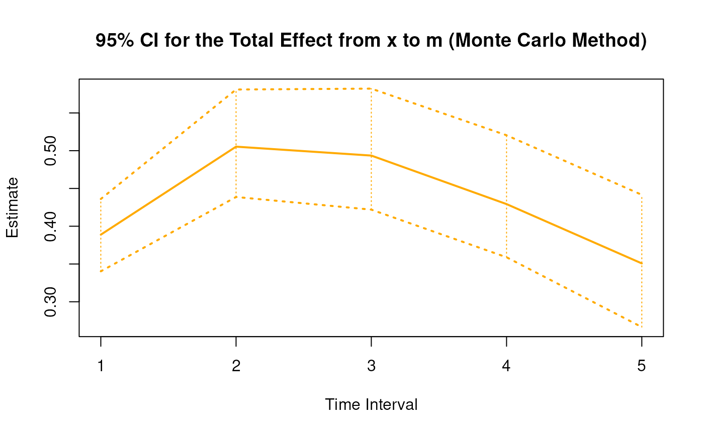
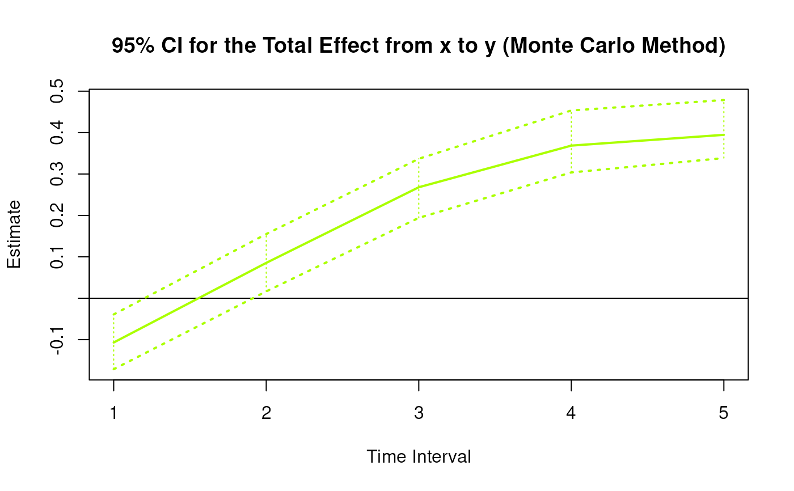
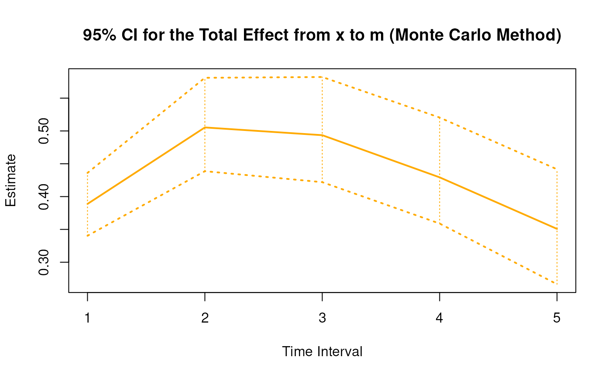
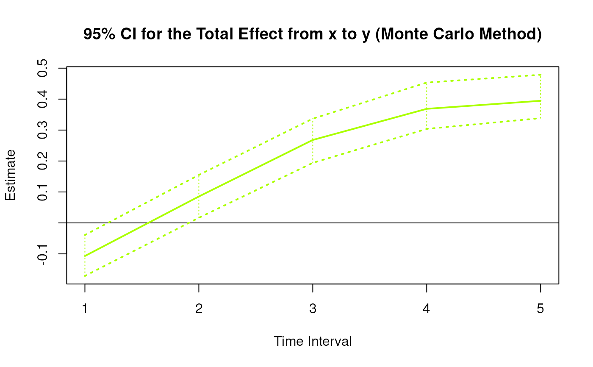

 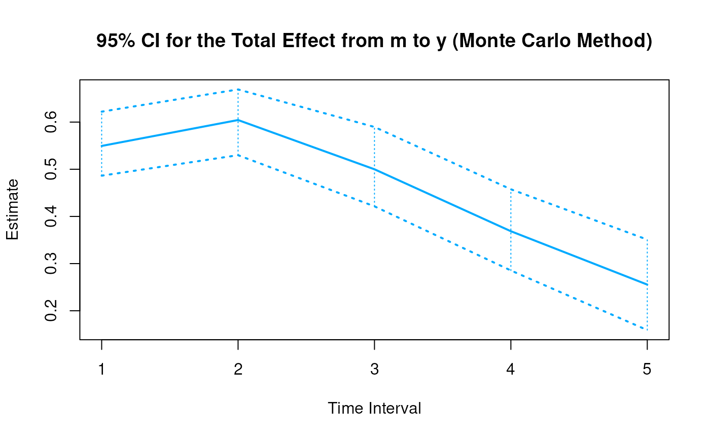
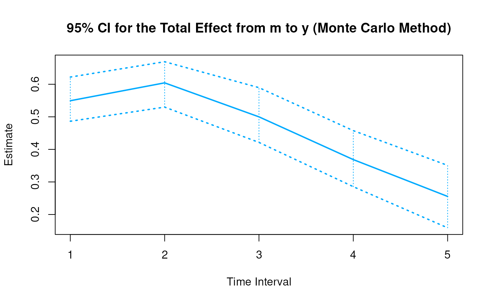
 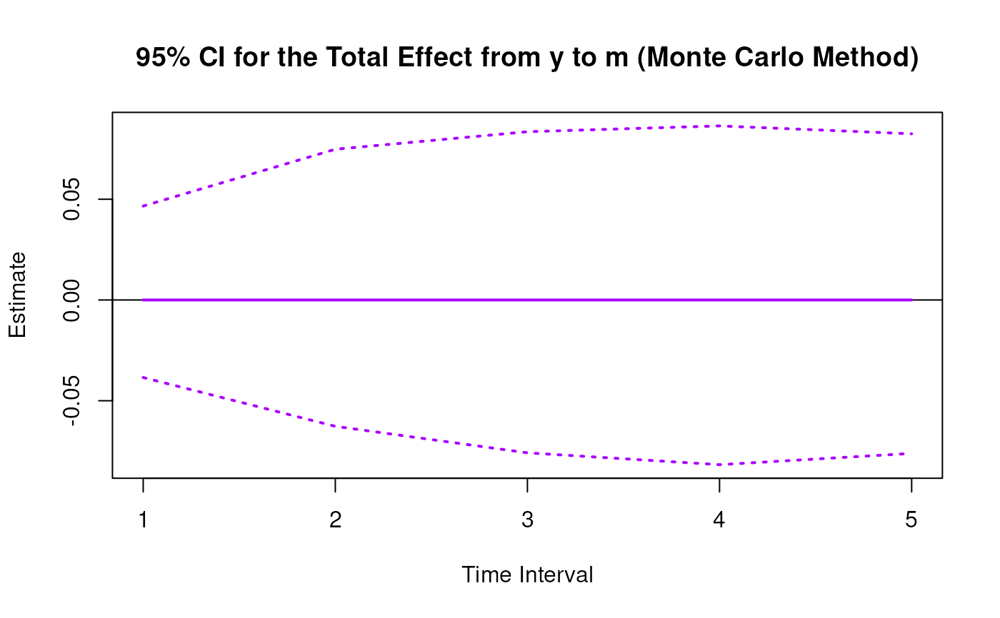
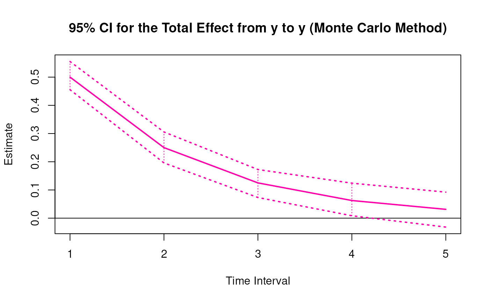
# Methods -------------------------------------------------------------------
# MCBetaStd has a number of methods including
# print, summary, confint, and plot
print(mc)
#>
#> Total, Direct, and Indirect Effects
#>
#> $`1`
#> interval est se R 2.5% 97.5%
#> from x to x 1 0.6998 0.0458 100 0.6098 0.7961
#> from x to m 1 0.3888 0.0277 100 0.3403 0.4361
#> from x to y 1 -0.1069 0.0337 100 -0.1713 -0.0391
#> from m to x 1 0.0000 0.0541 100 -0.1146 0.1092
#> from m to m 1 0.5999 0.0323 100 0.5396 0.6545
#> from m to y 1 0.5494 0.0359 100 0.4864 0.6221
#> from y to x 1 0.0000 0.0416 100 -0.0700 0.0842
#> from y to m 1 0.0000 0.0229 100 -0.0385 0.0466
#> from y to y 1 0.5001 0.0265 100 0.4555 0.5554
#>
#> $`2`
#> interval est se R 2.5% 97.5%
#> from x to x 2 0.4897 0.0530 100 0.4098 0.6038
#> from x to m 2 0.5053 0.0376 100 0.4387 0.5810
#> from x to y 2 0.0854 0.0385 100 0.0165 0.1550
#> from m to x 2 0.0000 0.0620 100 -0.1285 0.1200
#> from m to m 2 0.3599 0.0482 100 0.2711 0.4316
#> from m to y 2 0.6044 0.0409 100 0.5299 0.6692
#> from y to x 2 0.0000 0.0502 100 -0.0870 0.1036
#> from y to m 2 0.0000 0.0364 100 -0.0627 0.0748
#> from y to y 2 0.2501 0.0307 100 0.1958 0.3056
#>
#> $`3`
#> interval est se R 2.5% 97.5%
#> from x to x 3 0.3427 0.0528 100 0.2622 0.4434
#> from x to m 3 0.4936 0.0427 100 0.4220 0.5822
#> from x to y 3 0.2680 0.0363 100 0.1941 0.3368
#> from m to x 3 0.0000 0.0597 100 -0.1136 0.1074
#> from m to m 3 0.2159 0.0565 100 0.1054 0.3108
#> from m to y 3 0.4999 0.0450 100 0.4214 0.5896
#> from y to x 3 0.0000 0.0460 100 -0.0806 0.0938
#> from y to m 3 0.0000 0.0438 100 -0.0759 0.0835
#> from y to y 3 0.1251 0.0288 100 0.0732 0.1724
#>
#> $`4`
#> interval est se R 2.5% 97.5%
#> from x to x 4 0.2398 0.0514 100 0.1597 0.3290
#> from x to m 4 0.4293 0.0454 100 0.3589 0.5204
#> from x to y 4 0.3686 0.0358 100 0.3038 0.4534
#> from m to x 4 0.0000 0.0555 100 -0.0927 0.1129
#> from m to m 4 0.1295 0.0593 100 0.0053 0.2421
#> from m to y 4 0.3686 0.0495 100 0.2854 0.4576
#> from y to x 4 0.0000 0.0380 100 -0.0671 0.0769
#> from y to m 4 0.0000 0.0452 100 -0.0817 0.0864
#> from y to y 4 0.0625 0.0304 100 0.0085 0.1241
#>
#> $`5`
#> interval est se R 2.5% 97.5%
#> from x to x 5 0.1678 0.0499 100 0.0819 0.2714
#> from x to m 5 0.3508 0.0468 100 0.2665 0.4416
#> from x to y 5 0.3946 0.0385 100 0.3385 0.4786
#> from m to x 5 0.0000 0.0502 100 -0.0711 0.1098
#> from m to m 5 0.0777 0.0586 100 -0.0316 0.2029
#> from m to y 5 0.2555 0.0518 100 0.1590 0.3509
#> from y to x 5 0.0000 0.0299 100 -0.0516 0.0589
#> from y to m 5 0.0000 0.0425 100 -0.0761 0.0825
#> from y to y 5 0.0313 0.0342 100 -0.0316 0.0922
#>
summary(mc)
#> effect interval est se R 2.5% 97.5%
#> 1 from x to x 1 0.69977250 0.04584153 100 0.609800263 0.79613691
#> 2 from x to m 1 0.38882458 0.02774146 100 0.340301435 0.43607954
#> 3 from x to y 1 -0.10689374 0.03373783 100 -0.171343235 -0.03910697
#> 4 from m to x 1 0.00000000 0.05413487 100 -0.114554864 0.10917299
#> 5 from m to m 1 0.59989538 0.03228086 100 0.539629131 0.65446006
#> 6 from m to y 1 0.54943087 0.03593218 100 0.486375503 0.62210286
#> 7 from y to x 1 0.00000000 0.04158096 100 -0.069978350 0.08419140
#> 8 from y to m 1 0.00000000 0.02287789 100 -0.038467706 0.04661579
#> 9 from y to y 1 0.50007360 0.02653763 100 0.455466431 0.55535984
#> 10 from x to x 2 0.48968155 0.05301609 100 0.409792609 0.60379349
#> 11 from x to m 2 0.50534282 0.03761473 100 0.438703968 0.58099242
#> 12 from x to y 2 0.08537619 0.03845986 100 0.016520970 0.15495342
#> 13 from m to x 2 0.00000000 0.06195130 100 -0.128501620 0.12002161
#> 14 from m to m 2 0.35987447 0.04819742 100 0.271065357 0.43159309
#> 15 from m to y 2 0.60435691 0.04086121 100 0.529851093 0.66921661
#> 16 from y to x 2 0.00000000 0.05016101 100 -0.087029210 0.10356125
#> 17 from y to m 2 0.00000000 0.03635905 100 -0.062692060 0.07479334
#> 18 from y to y 2 0.25007360 0.03074378 100 0.195824888 0.30557324
#> 19 from x to x 3 0.34266568 0.05281164 100 0.262187269 0.44344399
#> 20 from x to m 3 0.49355305 0.04266416 100 0.421977255 0.58218446
#> 21 from x to y 3 0.26800143 0.03626586 100 0.194064568 0.33680333
#> 22 from m to x 3 0.00000000 0.05970868 100 -0.113592271 0.10738078
#> 23 from m to m 3 0.21588703 0.05650342 100 0.105419527 0.31077230
#> 24 from m to y 3 0.49994907 0.04499194 100 0.421397024 0.58962597
#> 25 from y to x 3 0.00000000 0.04599441 100 -0.080624702 0.09382282
#> 26 from y to m 3 0.00000000 0.04375317 100 -0.075852552 0.08350084
#> 27 from y to y 3 0.12505520 0.02884224 100 0.073229218 0.17243310
#> 28 from x to x 4 0.23978802 0.05135378 100 0.159681273 0.32901570
#> 29 from x to m 4 0.42931704 0.04535012 100 0.358920308 0.52043922
#> 30 from x to y 4 0.36856490 0.03575807 100 0.303759800 0.45341980
#> 31 from m to x 4 0.00000000 0.05551758 100 -0.092728769 0.11293315
#> 32 from m to m 4 0.12950963 0.05928525 100 0.005256487 0.24206241
#> 33 from m to y 4 0.36862633 0.04953581 100 0.285419794 0.45755739
#> 34 from y to x 4 0.00000000 0.03800484 100 -0.067122703 0.07692317
#> 35 from y to m 4 0.00000000 0.04523747 100 -0.081739936 0.08638891
#> 36 from y to y 4 0.06253681 0.03037461 100 0.008546347 0.12408688
#> 37 from x to x 5 0.16779706 0.04985991 100 0.081882464 0.27142605
#> 38 from x to m 5 0.35078078 0.04675633 100 0.266472539 0.44158762
#> 39 from x to y 5 0.39455777 0.03849245 100 0.338452030 0.47862426
#> 40 from m to x 5 0.00000000 0.05015623 100 -0.071091485 0.10982758
#> 41 from m to m 5 0.07769223 0.05857726 100 -0.031648320 0.20294748
#> 42 from m to y 5 0.25549689 0.05182686 100 0.159033085 0.35086532
#> 43 from y to x 5 0.00000000 0.02987096 100 -0.051647520 0.05887924
#> 44 from y to m 5 0.00000000 0.04248226 100 -0.076134392 0.08247566
#> 45 from y to y 5 0.03127301 0.03419857 100 -0.031634742 0.09222349
confint(mc, level = 0.95)
#> effect interval 2.5 % 97.5 %
#> 1 from x to x 1 0.60980026 0.79613691
#> 2 from x to m 1 0.34030143 0.43607954
#> 3 from x to y 1 -0.17134324 -0.03910697
#> 4 from x to x 2 0.40979261 0.60379349
#> 5 from x to m 2 0.43870397 0.58099242
#> 6 from x to y 2 0.01652097 0.15495342
#> 7 from x to x 3 0.26218727 0.44344399
#> 8 from x to m 3 0.42197725 0.58218446
#> 9 from x to y 3 0.19406457 0.33680333
#> 10 from x to x 4 0.15968127 0.32901570
#> 11 from x to m 4 0.35892031 0.52043922
#> 12 from x to y 4 0.30375980 0.45341980
#> 13 from x to x 5 0.08188246 0.27142605
#> 14 from x to m 5 0.26647254 0.44158762
#> 15 from x to y 5 0.33845203 0.47862426
plot(mc)
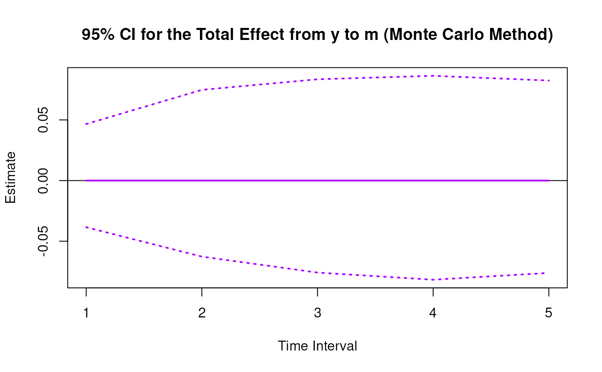
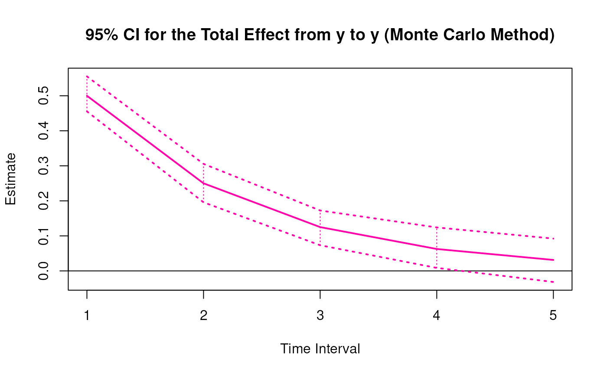
# Methods -------------------------------------------------------------------
# MCBetaStd has a number of methods including
# print, summary, confint, and plot
print(mc)
#>
#> Total, Direct, and Indirect Effects
#>
#> $`1`
#> interval est se R 2.5% 97.5%
#> from x to x 1 0.6998 0.0458 100 0.6098 0.7961
#> from x to m 1 0.3888 0.0277 100 0.3403 0.4361
#> from x to y 1 -0.1069 0.0337 100 -0.1713 -0.0391
#> from m to x 1 0.0000 0.0541 100 -0.1146 0.1092
#> from m to m 1 0.5999 0.0323 100 0.5396 0.6545
#> from m to y 1 0.5494 0.0359 100 0.4864 0.6221
#> from y to x 1 0.0000 0.0416 100 -0.0700 0.0842
#> from y to m 1 0.0000 0.0229 100 -0.0385 0.0466
#> from y to y 1 0.5001 0.0265 100 0.4555 0.5554
#>
#> $`2`
#> interval est se R 2.5% 97.5%
#> from x to x 2 0.4897 0.0530 100 0.4098 0.6038
#> from x to m 2 0.5053 0.0376 100 0.4387 0.5810
#> from x to y 2 0.0854 0.0385 100 0.0165 0.1550
#> from m to x 2 0.0000 0.0620 100 -0.1285 0.1200
#> from m to m 2 0.3599 0.0482 100 0.2711 0.4316
#> from m to y 2 0.6044 0.0409 100 0.5299 0.6692
#> from y to x 2 0.0000 0.0502 100 -0.0870 0.1036
#> from y to m 2 0.0000 0.0364 100 -0.0627 0.0748
#> from y to y 2 0.2501 0.0307 100 0.1958 0.3056
#>
#> $`3`
#> interval est se R 2.5% 97.5%
#> from x to x 3 0.3427 0.0528 100 0.2622 0.4434
#> from x to m 3 0.4936 0.0427 100 0.4220 0.5822
#> from x to y 3 0.2680 0.0363 100 0.1941 0.3368
#> from m to x 3 0.0000 0.0597 100 -0.1136 0.1074
#> from m to m 3 0.2159 0.0565 100 0.1054 0.3108
#> from m to y 3 0.4999 0.0450 100 0.4214 0.5896
#> from y to x 3 0.0000 0.0460 100 -0.0806 0.0938
#> from y to m 3 0.0000 0.0438 100 -0.0759 0.0835
#> from y to y 3 0.1251 0.0288 100 0.0732 0.1724
#>
#> $`4`
#> interval est se R 2.5% 97.5%
#> from x to x 4 0.2398 0.0514 100 0.1597 0.3290
#> from x to m 4 0.4293 0.0454 100 0.3589 0.5204
#> from x to y 4 0.3686 0.0358 100 0.3038 0.4534
#> from m to x 4 0.0000 0.0555 100 -0.0927 0.1129
#> from m to m 4 0.1295 0.0593 100 0.0053 0.2421
#> from m to y 4 0.3686 0.0495 100 0.2854 0.4576
#> from y to x 4 0.0000 0.0380 100 -0.0671 0.0769
#> from y to m 4 0.0000 0.0452 100 -0.0817 0.0864
#> from y to y 4 0.0625 0.0304 100 0.0085 0.1241
#>
#> $`5`
#> interval est se R 2.5% 97.5%
#> from x to x 5 0.1678 0.0499 100 0.0819 0.2714
#> from x to m 5 0.3508 0.0468 100 0.2665 0.4416
#> from x to y 5 0.3946 0.0385 100 0.3385 0.4786
#> from m to x 5 0.0000 0.0502 100 -0.0711 0.1098
#> from m to m 5 0.0777 0.0586 100 -0.0316 0.2029
#> from m to y 5 0.2555 0.0518 100 0.1590 0.3509
#> from y to x 5 0.0000 0.0299 100 -0.0516 0.0589
#> from y to m 5 0.0000 0.0425 100 -0.0761 0.0825
#> from y to y 5 0.0313 0.0342 100 -0.0316 0.0922
#>
summary(mc)
#> effect interval est se R 2.5% 97.5%
#> 1 from x to x 1 0.69977250 0.04584153 100 0.609800263 0.79613691
#> 2 from x to m 1 0.38882458 0.02774146 100 0.340301435 0.43607954
#> 3 from x to y 1 -0.10689374 0.03373783 100 -0.171343235 -0.03910697
#> 4 from m to x 1 0.00000000 0.05413487 100 -0.114554864 0.10917299
#> 5 from m to m 1 0.59989538 0.03228086 100 0.539629131 0.65446006
#> 6 from m to y 1 0.54943087 0.03593218 100 0.486375503 0.62210286
#> 7 from y to x 1 0.00000000 0.04158096 100 -0.069978350 0.08419140
#> 8 from y to m 1 0.00000000 0.02287789 100 -0.038467706 0.04661579
#> 9 from y to y 1 0.50007360 0.02653763 100 0.455466431 0.55535984
#> 10 from x to x 2 0.48968155 0.05301609 100 0.409792609 0.60379349
#> 11 from x to m 2 0.50534282 0.03761473 100 0.438703968 0.58099242
#> 12 from x to y 2 0.08537619 0.03845986 100 0.016520970 0.15495342
#> 13 from m to x 2 0.00000000 0.06195130 100 -0.128501620 0.12002161
#> 14 from m to m 2 0.35987447 0.04819742 100 0.271065357 0.43159309
#> 15 from m to y 2 0.60435691 0.04086121 100 0.529851093 0.66921661
#> 16 from y to x 2 0.00000000 0.05016101 100 -0.087029210 0.10356125
#> 17 from y to m 2 0.00000000 0.03635905 100 -0.062692060 0.07479334
#> 18 from y to y 2 0.25007360 0.03074378 100 0.195824888 0.30557324
#> 19 from x to x 3 0.34266568 0.05281164 100 0.262187269 0.44344399
#> 20 from x to m 3 0.49355305 0.04266416 100 0.421977255 0.58218446
#> 21 from x to y 3 0.26800143 0.03626586 100 0.194064568 0.33680333
#> 22 from m to x 3 0.00000000 0.05970868 100 -0.113592271 0.10738078
#> 23 from m to m 3 0.21588703 0.05650342 100 0.105419527 0.31077230
#> 24 from m to y 3 0.49994907 0.04499194 100 0.421397024 0.58962597
#> 25 from y to x 3 0.00000000 0.04599441 100 -0.080624702 0.09382282
#> 26 from y to m 3 0.00000000 0.04375317 100 -0.075852552 0.08350084
#> 27 from y to y 3 0.12505520 0.02884224 100 0.073229218 0.17243310
#> 28 from x to x 4 0.23978802 0.05135378 100 0.159681273 0.32901570
#> 29 from x to m 4 0.42931704 0.04535012 100 0.358920308 0.52043922
#> 30 from x to y 4 0.36856490 0.03575807 100 0.303759800 0.45341980
#> 31 from m to x 4 0.00000000 0.05551758 100 -0.092728769 0.11293315
#> 32 from m to m 4 0.12950963 0.05928525 100 0.005256487 0.24206241
#> 33 from m to y 4 0.36862633 0.04953581 100 0.285419794 0.45755739
#> 34 from y to x 4 0.00000000 0.03800484 100 -0.067122703 0.07692317
#> 35 from y to m 4 0.00000000 0.04523747 100 -0.081739936 0.08638891
#> 36 from y to y 4 0.06253681 0.03037461 100 0.008546347 0.12408688
#> 37 from x to x 5 0.16779706 0.04985991 100 0.081882464 0.27142605
#> 38 from x to m 5 0.35078078 0.04675633 100 0.266472539 0.44158762
#> 39 from x to y 5 0.39455777 0.03849245 100 0.338452030 0.47862426
#> 40 from m to x 5 0.00000000 0.05015623 100 -0.071091485 0.10982758
#> 41 from m to m 5 0.07769223 0.05857726 100 -0.031648320 0.20294748
#> 42 from m to y 5 0.25549689 0.05182686 100 0.159033085 0.35086532
#> 43 from y to x 5 0.00000000 0.02987096 100 -0.051647520 0.05887924
#> 44 from y to m 5 0.00000000 0.04248226 100 -0.076134392 0.08247566
#> 45 from y to y 5 0.03127301 0.03419857 100 -0.031634742 0.09222349
confint(mc, level = 0.95)
#> effect interval 2.5 % 97.5 %
#> 1 from x to x 1 0.60980026 0.79613691
#> 2 from x to m 1 0.34030143 0.43607954
#> 3 from x to y 1 -0.17134324 -0.03910697
#> 4 from x to x 2 0.40979261 0.60379349
#> 5 from x to m 2 0.43870397 0.58099242
#> 6 from x to y 2 0.01652097 0.15495342
#> 7 from x to x 3 0.26218727 0.44344399
#> 8 from x to m 3 0.42197725 0.58218446
#> 9 from x to y 3 0.19406457 0.33680333
#> 10 from x to x 4 0.15968127 0.32901570
#> 11 from x to m 4 0.35892031 0.52043922
#> 12 from x to y 4 0.30375980 0.45341980
#> 13 from x to x 5 0.08188246 0.27142605
#> 14 from x to m 5 0.26647254 0.44158762
#> 15 from x to y 5 0.33845203 0.47862426
plot(mc)


 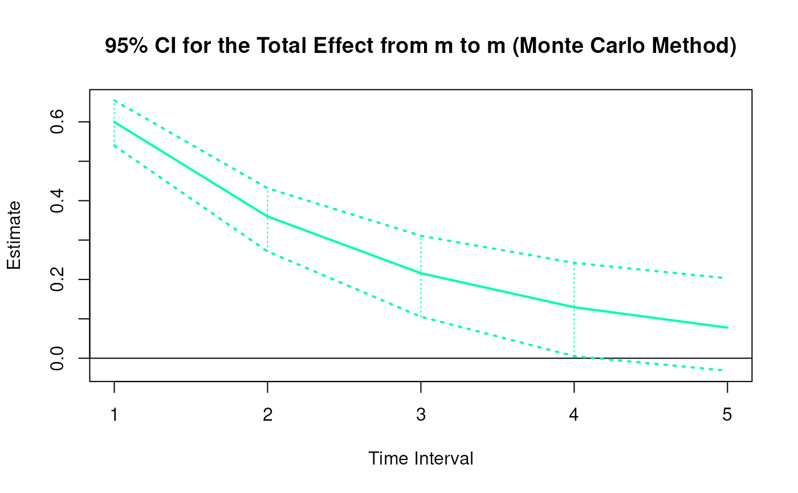
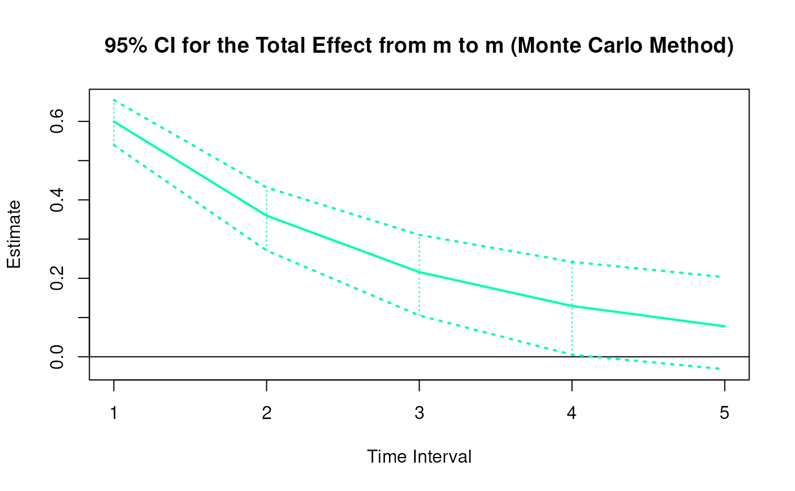
 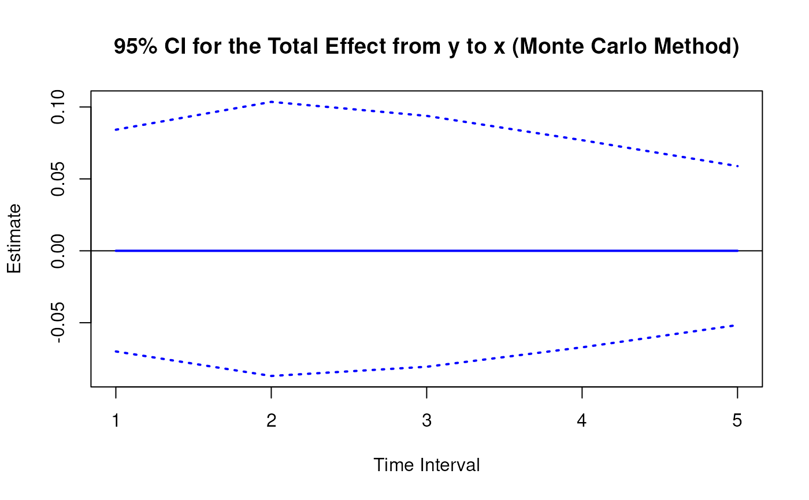
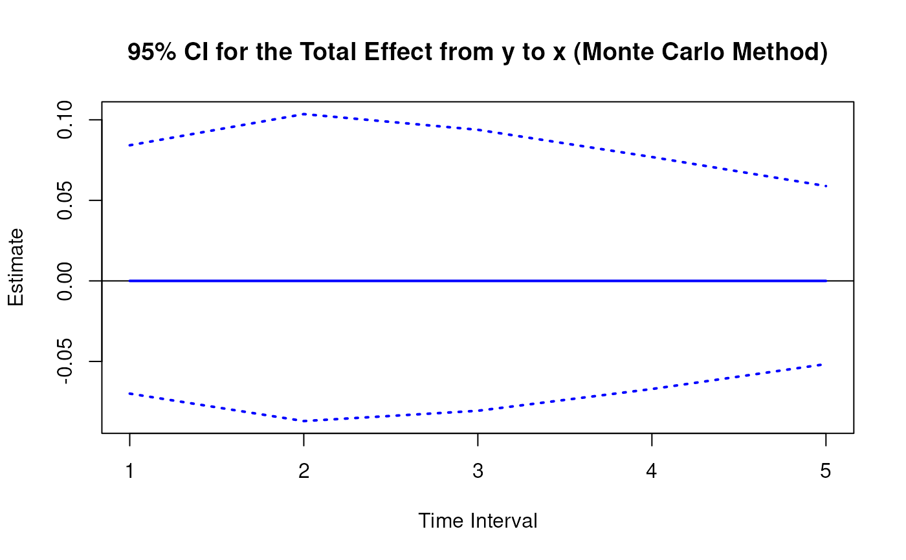